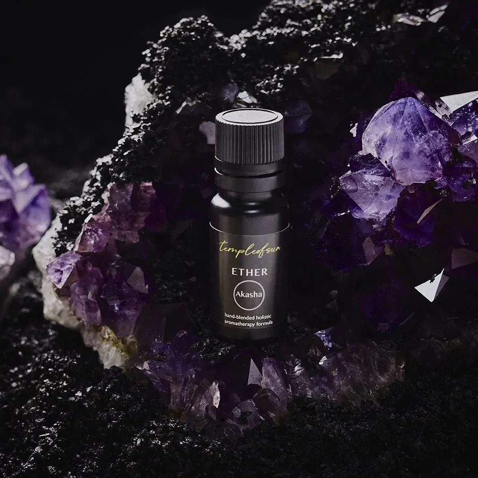

The 5 Elements
the Panchamahabhuta, bottled
All living and non-living matter in the universe is made up of five fundamental elements that are called Panchamahabhuta.
The five great elements in Ayurveda are ether/space (Akasha), air (Vayu), fire (Agni), water (Jala), and earth (Prithvi). Ayurveda focuses on bringing these five elements into balance, both internally and externally, to bring about superior health.
Ayurveda believes disease (or dis-ease in the body) starts with an emotional response followed by physical symptoms. For that reason, the primary focus is looking at root causes over just treating outward symptoms. The root cause comes down to the elements that exist within us and identifying how they are out of balance.
In the body, each element is associated with different tissues and functions. In the mind, the elements are also associated with personality characteristics and emotional responses.
The following 5 elements holistic formulas are meant to harmonize the excess or deficiency of the elements within ourselves. You can use an element formula to balance either the abundance or deficiency of a given element.
Where does it live in you?
touch a centre of the body to meet its element
The five centres
from root to throat, each carries an element
Ether at the throat, Air at the heart, Fire at the solar plexus, Water at the sacral centre, Earth at the root. Touch one, and I will introduce you.
Tap any bottle for its story
ingredients, rituals and Peter's personal tips, one click away
Not sure which one? Let me guide you→Nothing here carries that feeling; Rainbow carries them all.